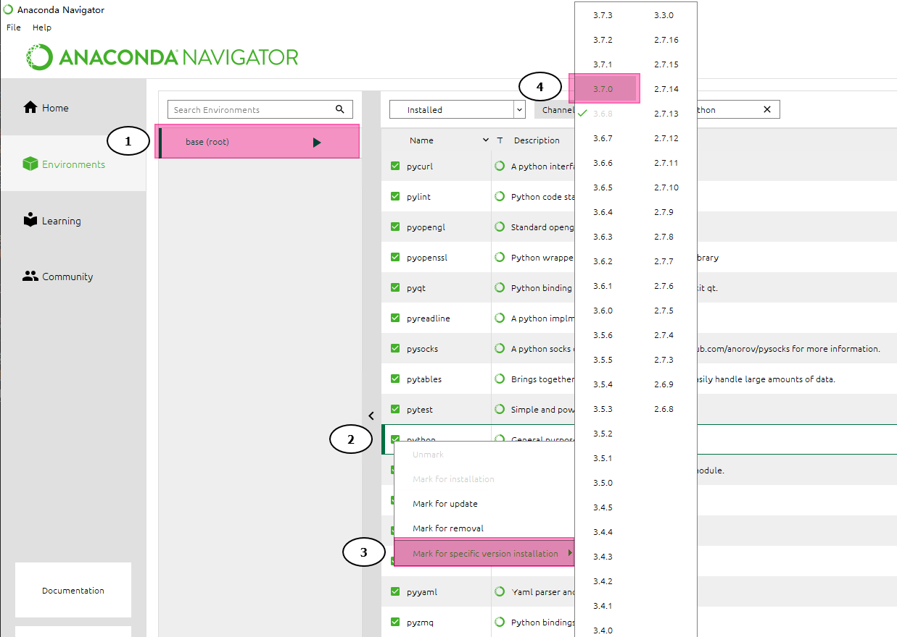
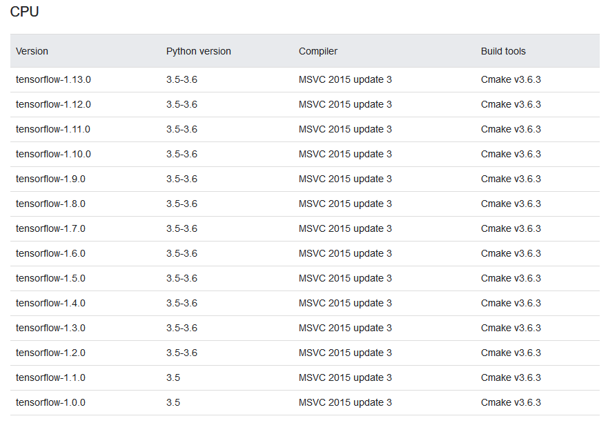
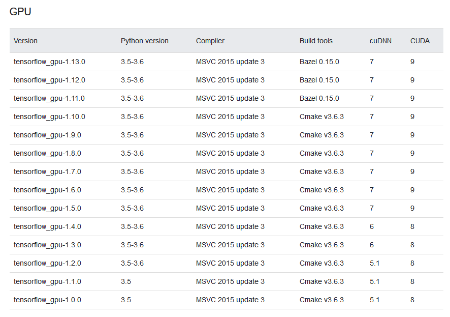
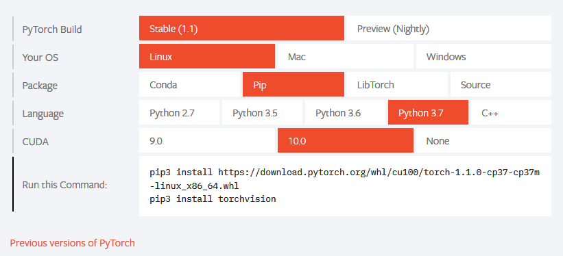

前言
由于之前的算法编写、调试等过程均在自己的电脑上运行，所以出于以下原因一直对Anaconda嗤之以鼻：
- 其存储空间有限，Anaconda会安装很多
使用率很低的库； - 本人有一种莫名的
折腾的劲儿，喜欢精简而有效的原生python环境。
但最近为课题组在Windows Server 2019搭建服务器深度学习开发环境时，在构建原生python环境中(其实就是安装tensorflow这个磨人的小妖精)屡屡受挫，
不再想理什么DLL Load fail、ImportError；并且服务器非我一人使用，有人习惯Anaconda，故尝试直接将Anaconda的python环境
作为系统默认Python开发环境。以下是个人的折腾记录。
安装
安装推荐官网下载对应平台的程序安装包，此处贴出Anaconda官网地址。
若要下载历史版本，可见链接。
需要注意的是，每一版的Anaconda都与某一版本的Python版本有所关联，如果不想后期更改base(root)环境或新建其他python版本环境的话，最好选择某一版本的Anaconda
进行安装。二者版本对应情况可见链接。
在安装过程中，注意以下几个设置：
- 安装路径
- 是否添加Anacona至环境变量
- 是否设置Anaconda所安装的python为默认python环境
其中安装路径根据实际情况进行设置。笔者一般软件安装路径为非系统盘，如D:\Anaconda3(后续Anaconda的安装路径将写作此路径).若你本机上已安装了python，后两者均不建议进行设置，因为其会改变
系统变量中的python环境变量。如有需要，后续可进行更改。如：
添加Anacona至环境变量：添加以下地址至环境变量
1
2
3D:\Anaconda3
D:\Anaconda3\Library
D:\Anaconda3\Scripts
直接更改base(root)环境下的python版本
此需求大多是为安装tensorflow-gpu而衍生出，因为其对python版本、CUDA等要求甚严。假设需要将默认的python版本(3.7.3)更改为3.6.8，
可参考以下两种方式(参考链接)：
Anaconda Navigator中进行更改
打开Anaconda Navigator，找到Environment中base(root)下已安装的python,右键图标进行更改，如下图：
- 点击
base切换到python环境 - 搜索已安装的
python库 - 右键点击
python可出现Mark for specific version installation选项 - 点击想切换的
python版本代号 - 点击页面下方
apply按钮即可执行修改(图中未显示)

Anaconda Prompt中进行更改
直接打开终端或者Anaconda Prompt,输入以下命令：
1 | conda install python=3.6.8 |
若不对默认的base(root)环境进行修改，也可以直接新建相应python版本的环境，以满足需求。在此不做赘述。
Anaconda Channels 无法更改后的折衷方案
众所周知，由于GFW的原因，国外诸多网站在国内无法正常访问。于是催生出了一系列国内源镜像，为大家提供方便。原本Anaconda在国内也是有镜像源地址的，但是最近由于版权或商标问题，国内诸多镜像地址，如清华大学镜像、中科大镜像、南京大学镜像等镜像网站均关闭了对conda源的支持,直接将其链接至官方镜像地址。以下是相关情况的说明和更新：
所以目前修改Anaconda Channels基本无效，除非是自己搭梯子。否则就自己用官方源慢慢安装和更新吧(亲测要等很久才能安装上一个库)。若针对已成功安装Anaconda的用户来说，可以激活Anaconda环境后，用pip命令对第三方库进行安装或者更新。这是一个折衷的方法了。因为pip在国内的镜像地址是可以用的，其中清华的镜像是比较快的。关于修改pip源镜像的地址，可以参考此链接。
Anaconda安装深度学习框架
无论是tensorflow还是PyTorch，在GPU的环境下更能发挥其加速作用。安装cpu版本的深度学习框架配置起来较为简单顺畅，在此不做赘述，可自行百度。
准备工作
由于利用Anaconda搭建基于Tensorflow或Pytorch的深度学习框架不需要自己安装其他的依赖性，所以个人推荐此方法。若想自己根据原生python搭建上述框架，便需要自行进行以下操作：
- 确认自己具有Nvidia的显卡，安装最新Nvidia显卡驱动
- 安装CUDA
- 安装cudnn
需要注意的是，cudnn需要注册Nvidia开发者账户才可以进行下载。其中与tensorflow或pytorch的版本需要一一对应，tensorflow所支持的cuda对应版本可查看此链接寻找适合的版本或参考以下图片：


Anaconda安装Tensorflow
在Anaconda中安装Tensorflow的过程还是较为简单的，只需要搜索到相应的Tensorflow库，然后选择对应的版本安装即可。因为其会根据所选择的tensorflow版本安装对应的cuda和cudnn以支持GPU加速。
Anaconda安装Pytorch
Pytorch的安装更加人性化，不需要进行各种配置，版本之间的依赖也较少。可以直接选择与cuda相对应版本的pytorch进行安装，如下图：

安装测试
安装上述环境后均需要进行测试，查看是否能够正常使用。
打开cmd并启动python开发环境后，可输入以下测试代码进行测试：
Tensorflow-gpu测试代码
1
2
3
4
5
6import tensorflow as tf
matrix1 = tf.constant([[3., 3.]])
matrix2 = tf.constant([[2.],[2.]])
product = tf.matmul(matrix1, matrix2)
sess = tf.Session()
print(sess.run(product))
若输出的信息中有显卡信息，并且没有报错，成功输出结果，则安装成功，可正常使用tensorflow-gpu。
Pytorch-gpu测试代码
1
2import torch
torch.cuda.is_available()
输出true，则说明GPU驱动和CUDA可以支持Pytorch的加速计算。
结语
上述是简单的Anaconda安装和深度学习框架搭建基本流程。如需了解细节可阅读相应参考链接。